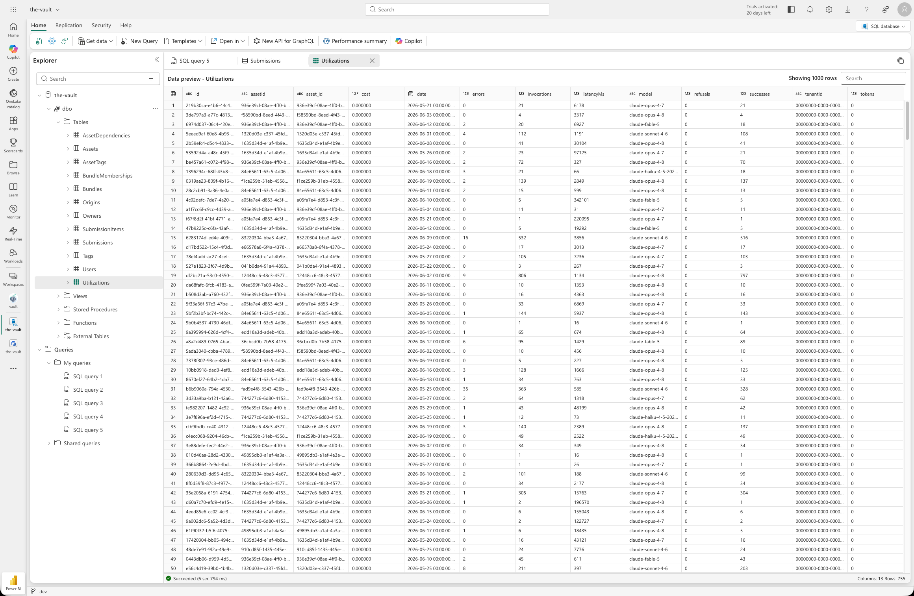
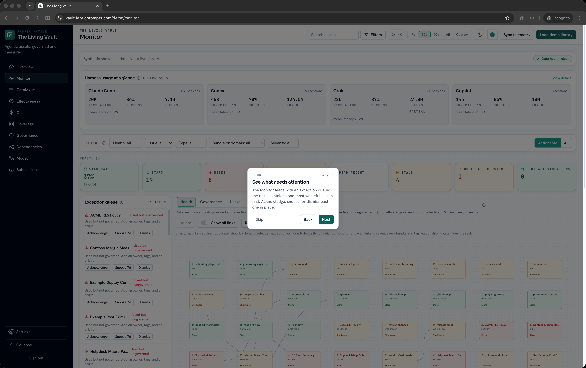
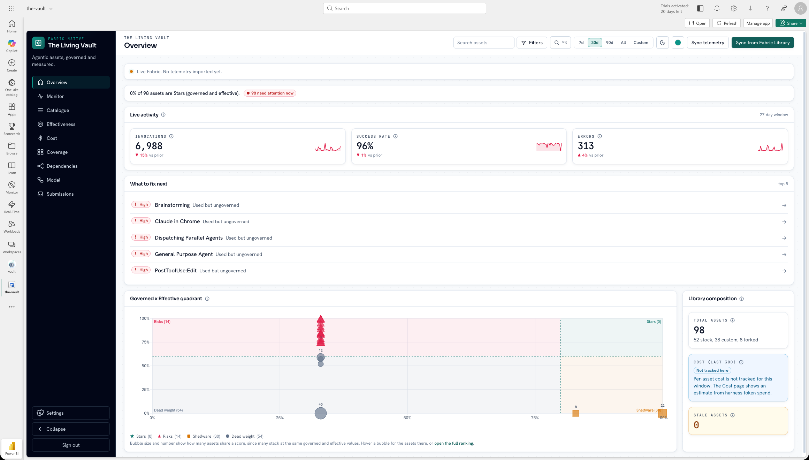

Is The Library the same as the Living Vault?
No. The Library is distribution (install across harnesses). The Living Vault is governance and measurement inside Fabric. They complement each other; neither replaces the other.
Four similarly named systems serve different roles. This map shows how install, catalog projection, measurement, and Fabric-native governance connect. There is no automatic sync between every box; each arrow is an intentional, documented handoff. The public demo runs at zero Fabric cost; a live Rayfin deploy on Fabric exercises the same model end to end.
Distribution catalog. Installs the same agentic assets across Claude Code, Codex, Copilot, Grok, and devices.
Upstream catalog for asset-side projection into fabric-library.json. Not the same repo as The Library.
Rayfin Fabric app: system of record + effectiveness monitor. This is the operational product surface.
Separate personal skill library. Tooling source only; does not feed the Living Vault catalog.
Hosts the Rayfin app bundle and semantic model. Live read/write path deploys on request; demo SWA runs at zero Fabric cost.
Optional analytics consumer of the Fabric semantic model. The Vault's Monitor is the live ops UI; Power BI is not a substitute.
| From | To | What moves | Who triggers it |
|---|---|---|---|
| The Library | Harness workspaces | Installed skills, agents, MCP servers | Contributor / library install |
| the-catalog-source | The Living Vault | fabric-library.json catalog projection |
Admin import or accepted submission |
| Harness session logs | The Living Vault | Metadata-only utilization rows | Optional local collectors (self-host) |
| Rayfin semantic model | Power BI | Nine-entity star schema | Analyst bind (optional) |
Four captures from the same live Fabric session: SQL facts, ops Monitor, executive Overview, and optional Power BI downstream.



No. The Library is distribution (install across harnesses). The Living Vault is governance and measurement inside Fabric. They complement each other; neither replaces the other.
No. Different repos and roles. the-catalog-source is the upstream
catalog projection source for fabric-library.json. The
Library is the cross-harness install catalog.
No. The Monitor and /model canvas are the live operational UI. Power BI is an optional downstream consumer of the same Rayfin semantic model.
No. The public SWA ships synthetic utilization JSON only. Real harness telemetry stays in gitignored local snapshots when you self-host. See the telemetry guide.